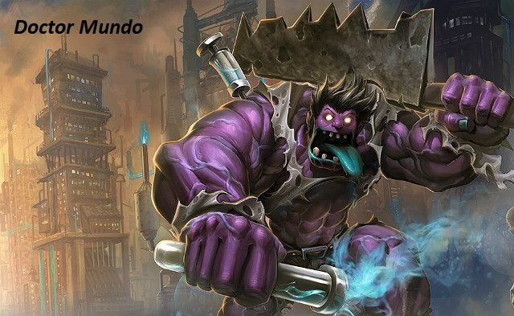

Historia Doctora Mundo:
Mundo w czasie swojego dzieciństwa poddawany był różnym eksperymentom takim jak testowanie jego odporności na ból- wtykali mu igły pod paznokcie,
przykładali rozgrzane żelazo- przy każdym z nich Mundo się śmiał a z czasem zasypiał z nudów. Lekarzy strasznie frustrował ten stan rzeczy, ale dzięki temu doszli do zaskakującego wniosku. Nie ważne co mu robili jego ciało
się goiło w ciągu kilku godzin i tak minęło kilka kolejnych lat z jego życia. Pewnego dnia Mundo obrał lekarzy za wzór do naśladowania i pewnej nocy stwierdził, że czas na leczenie innych. Udał się do kuchni skąd wziął tasak
(uważał, że tylko ból jest w stanie uleczyć wszystkie urazy) i zaczął chodzić po szpitalu, od drzwi do drzwi i leczyć. Gdy nastał ranek wśród żywych został tylko Mundo, który zabrał i ubrał kitel jednej z ofiar, po czym mianował
się Doktorem Mundo i za swój cel obrał ,,leczenie potrzebujących”. Od tej pory Doktor Mundo błądzi po świecie i szuka osób, które mógłby ,,wyleczyć’’.
Teraz z kolei przyjrzymy się kilku ciekawostką z Gry.
-W grze występuje Ostrze zniszczonego króla- należy ono do Viega- Zniszczonego króla
-Kalista w grze jest przebita włóczniami, gdyż w przeszłości została zdradzona przez zaufanego Hecarima i została przebita włóczniami przez niego i jego oddział
-Lux jest siostrą Garena, oraz czarodziejką. Pochodzi z Demaci, gdzie musi skrywać swoje magiczne zdolności, gdyż magia tam jest zakazana
